採訪規劃

日期：2020/1/23(四)
時間：早上9點～下午6點30分
交通方式：捷運＋客運+走路
小插曲：突然有組員提議搭計程車，馬上招開緊急討論會議，於是先派組員去詢問計程車車價，並多位比較，有組員同時提議找認識的計程車叔叔來接送，大家都覺得是很不錯的建議，於是立刻接洽。後來決定搭乘組員所介紹的那位叔叔計程車的車前往。因為考量到車程所花費的時間，希望可以盡快到達目的地，一次就順利完成採訪活動。
採訪摘錄：2020/1/23(四) 早上9點捷運左營高鐵站1號出口集合搭9點10分的E01A(往旗山轉運站)到旗山轉運站(842高雄市旗山區大同街23號)，往西走大同街朝至誠巷前進，於延平一路向右轉，於永安街向左轉就到達旗山天后宮了。
探訪實錄
巧奪天工的建築有著不同的含意；廟宇裡的神明庇佑著信仰之徒
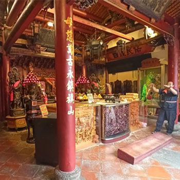
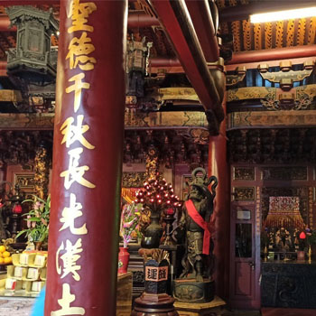
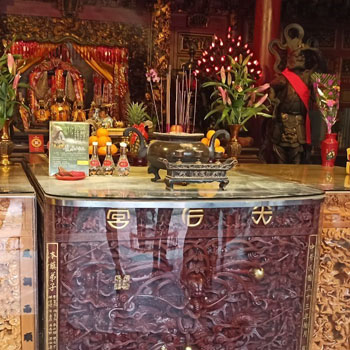
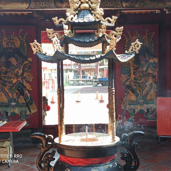
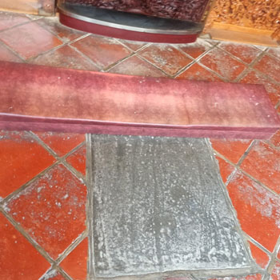
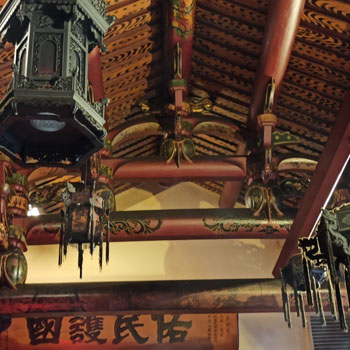
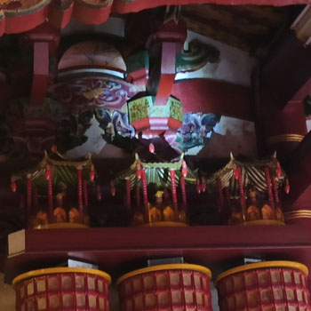
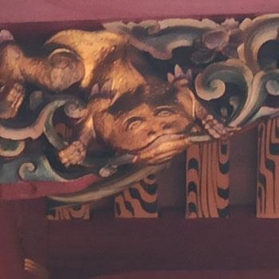
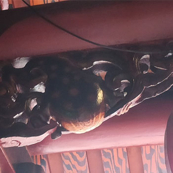
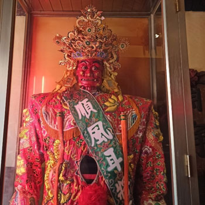
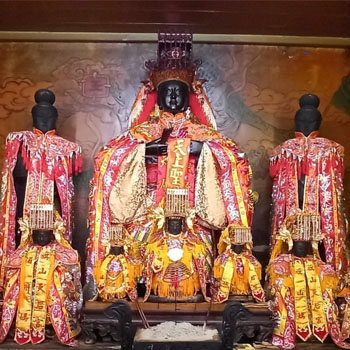
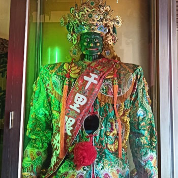
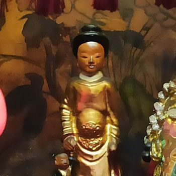
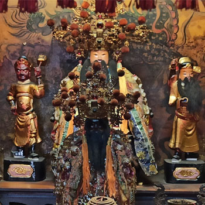
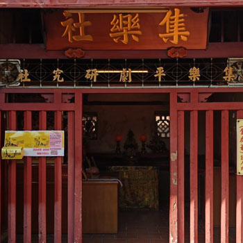
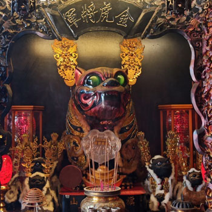
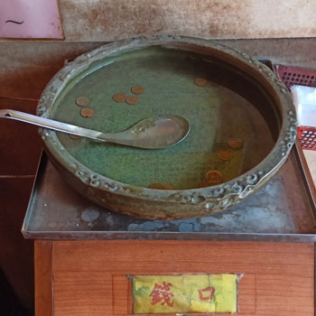
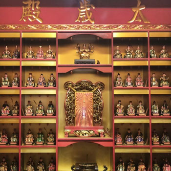
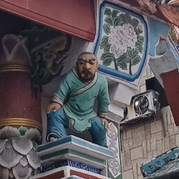
無遠弗屆的美食天堂，使我們置身於幸福之中
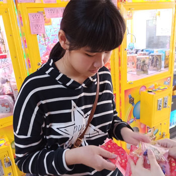
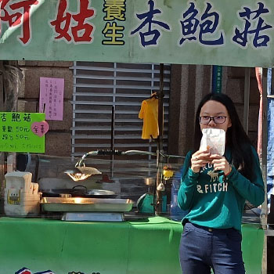
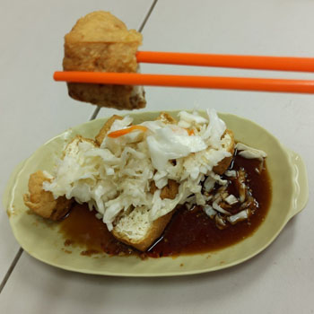
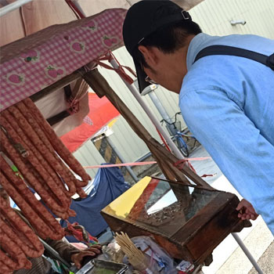
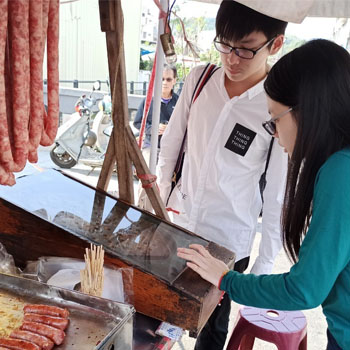
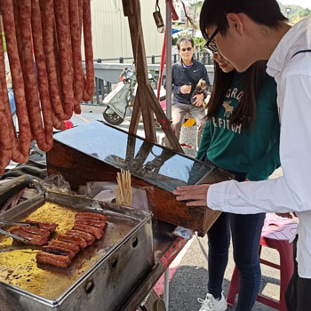
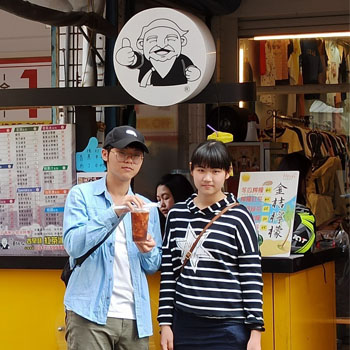
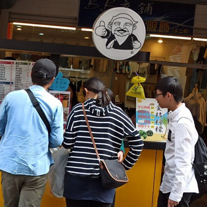
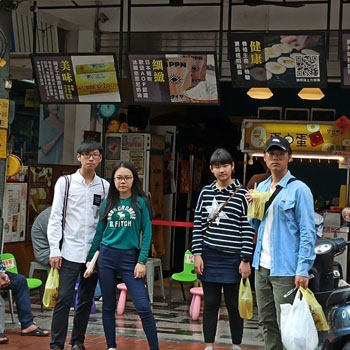
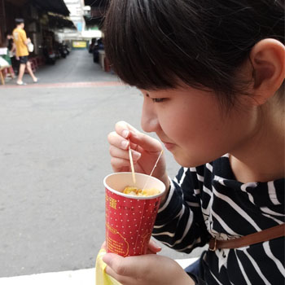
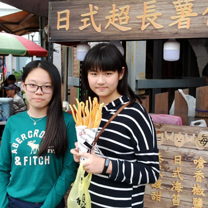
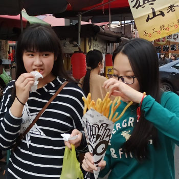
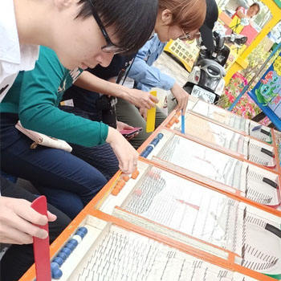
娓娓道盡古來千百年歷史，長存於心歷久不衰
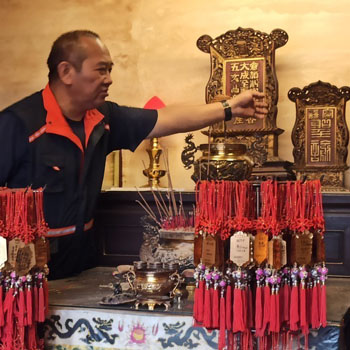
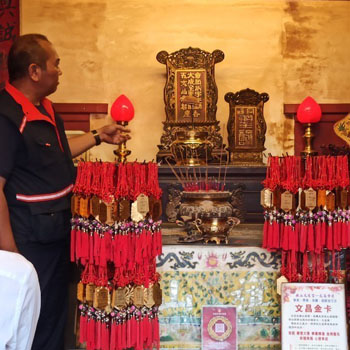
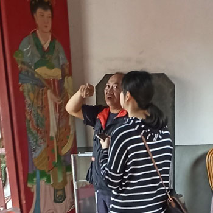
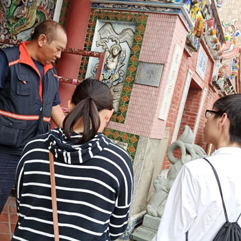
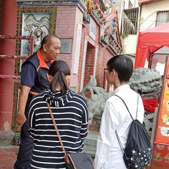
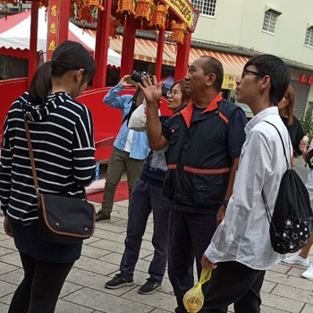
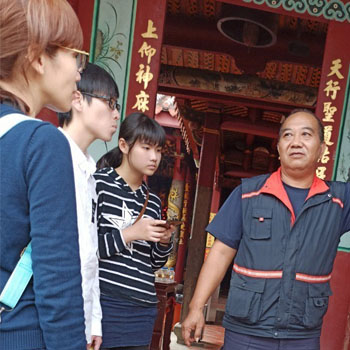
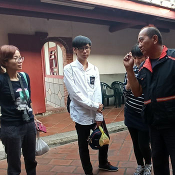
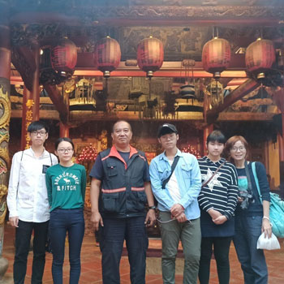
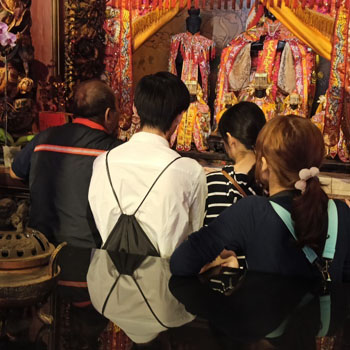
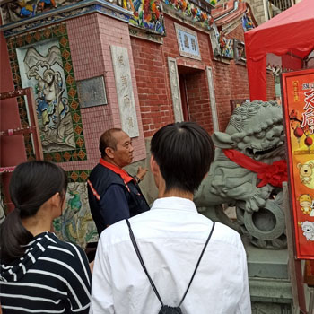
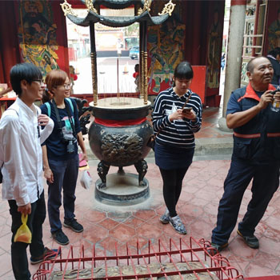
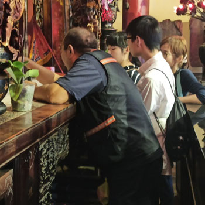
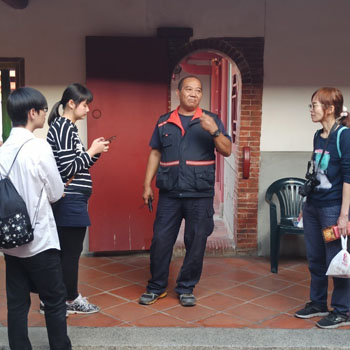
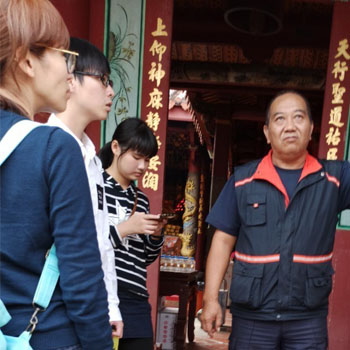
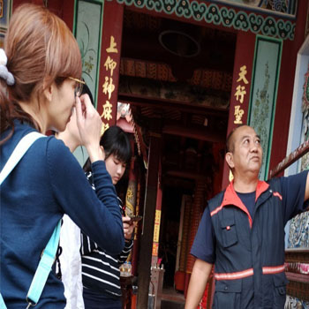
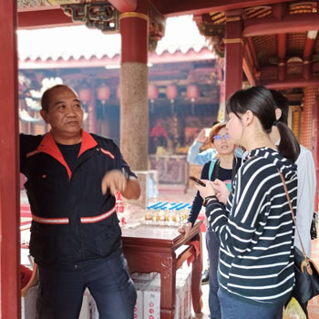
探訪Q&A
不是，根據廟公所說是自然而然的媽祖就會找到當廟公的人。
因為這些神明要把你那一年的好壞回去稟告給天庭，來年好與不好就可能是看你這年有沒有做善事與壞事。
可以，只要神明是女的就可以進廟，例如媽祖、王母娘娘….等。
第一步：點香跟神明稟告你的姓名、出生年月日（農曆獲國歷要先說清楚）、住址，和心中所要問的事情，要清楚描述問題，並設定選項。
第二步：等待三分之二炷香或者一炷香的時間，能讓神明徹底調查一下問題的原委。
第三步：一定要先問過神明是否賜籤才抽，否則得出來的答案容易不準：問神明是否要賜籤回答的同時，亦可決定好「抽籤配對」，若神明以三個聖筊回覆，才能抽籤詩。
第四步：抽完第一支籤後，要向神明確認是否是這支籤（記得一定要連續三個聖筊才可以）。
是建於乾隆44年、嘉慶20年，一直到道光2年才建好，是經過3個皇帝。這個地的取得(不易)，以前這邊都是香蕉園，地土上的關係，因為有時候會稍微會有一點要與不要、願不願意，把這個地捐出來，他是慢慢的，地主慢慢地捐出來，才完成這個廟。
閩式建築，是山窗門，再加左右相環兩個，就變成五門。一般的話，我們就是以山窗的門來算，如果加左右相環就剛好是五門。
旗山、台南、鹿港、基隆、旗津、高雄，牌子(聖諭宣講)皇帝親自頒的跟喧讀。這裡是皇帝宣讀法令的地方，外面有奉獻碑的碑文，以前蕃薯寮的羅漢腳(單身男子)，有聖諭宣講這個牌子才可以宣布朝廷裡面頒發下來的法條法令規定，宣布完，公布在媽祖廟外面的公布覽上。以前的媽祖廟可以辦私塾，因為有牌子(聖諭宣講)。
六十甲子的太歲殿都在裡面，六十位都在裡面，上面的斗母管的，每一年有一位當值太歲值班，元宵以後會有一位太歲下來值班。犯太歲的點太歲燈，斗母會保佑你那一年平安。農曆12/24送神意思是把那一年犯太歲的，還有平安斗的、點燈的等，把它送回去，還有家裡面的灶神，到元宵節那一天點燈。
演藝界所有的事物都由祂來掌管。
來求金虎將軍的基本上都是想要能夠賺多一點錢，吃的肉一定要燙過，生的不能吃(因為吃生肉，會有野性，有可能會傷人)。
全台只有旗山天后宮的有戴帽子，因為家慶皇帝以前來過，民間故事有演。
廟公是原住民，從那瑪夏搬來，到16歲進士官學校，在軍中12年，轉警察，警察第一屆第一梯次霹靂組總指教官，經歷美麗島事件，520事件，在台南服務是特種兵，就是現在的危安小組，五常街槍戰，白小燕事件，阿扁被官時回到原單位，有特殊體質比較有感應，跟媽祖有連結。廟公經歷10年。櫃台姐姐履歷放在媽祖前面拔杯，一個一個問，3個聖杯以上錄取。工作大致上是燒香奉茶、媽祖在哪廟公就在哪。座右銘:“我會相信，但我不會迷糊。”